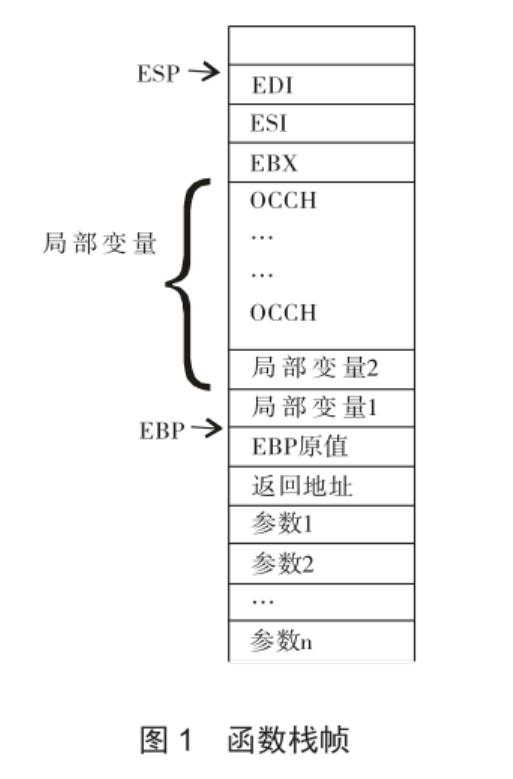

利用反汇编手段解析C语言函数
1、问题的提出
函数是C语言中的重要概念。利用好函数能够充分利用系统库的功能写出模块独立、易于维护和修改的程序。函数并不是C语言独有的概念，其他语言中的方法、过程等本质上都是函数。
2、解决方法
在《微机原理》课程介绍了堆栈、汇编语言等必要的相关知识之后，通过在高级语言开发环境下反汇编C语言程序代码，通过分析汇编代码来理解函数调用中的堆栈变化，可以在实践中理解高级语言和低级语言的底层映射关系，理解函数调用的实质。本文通过在Visual C++ 6.0下反汇编一个32位C语言程序的部分代码来解析解释函数调用的具体过程。
3 函数调用过程
函数调用过程主要由参数传递、地址跳转、局部变量分配和赋初值、执行函数体，结果返回等几个步骤组成。
3.1 参数传递及函数跳转
参数由实参传递给形参。在底层实现上，即是实参按照函数调用规定压入堆栈。参数传递完成后就通过CALL指令由当前程序跳转到子程序处。
3.2 局部变量分配并赋值
函数的"{"被认为是分配局部变量空间的时机。在汇编层面局部变量分配体现为堆栈中以EBP寄存器为基址向低地址端分配的一个连续区域，通过EBP寄存器的相对寻址方式来寻址函数内的局部变量。由于堆栈增长的方向是高地址端到低地址端，因此函数中先定义的局部变量地址较大，后定义的变量地址逐渐变小，相邻定义的变量其地址一定相邻。由于全局数据和局部数据定义在不用的数据区而并不与局部变量相邻，根据程序局部性原理，相邻的数据会被缓存，因此对相同的运算，局部变量作为操作数的运算效率就可能高于有全局变量参与的运算。同时，局部变量分配和回收只需要移动堆栈指针ESP，因此效率最高。
3.3 寻址函数的参数
参数存放在以EBP为基址的高地址端。对参数的访问同样是通过EBP寄存器相对寻址操作来实现。
3.4 执行函数体内的语句
函数内和具体功能相关的语句被转化成一系列汇编语句。
3.5 返回值
return语句将返回值返回到主调函数。在底层，参数是通过EAX寄存器或EDX寄存器传递给主调函数。
3.6 返回主调函数
函数的"}"被解释为函数体已经执行完。遇到"}"时，会将堆栈中的局部变量、程序中压入堆栈的寄存器的值全部弹出，将之前CALL指令执行时压入堆栈的函数返回地址弹到指令指针寄存器EIP，从而返回到主调函数。
3.7 堆栈平衡
堆栈平衡指的是将函数调用前压入堆栈的参数弹出堆栈，使堆栈恢复到其调用前的状态。由于函数调用完成后，参数就是无用的数据了，因此需要将其移出堆栈。
在C语言中不需要进行堆栈平衡。而在汇编层面上却根据调用约定来确定由主调函数或是被调函数完成堆栈平衡。
C语言函数调用堆栈常见形式如下图所示：

参数由主调函数压入堆栈，CALL指令将函数返回地址入栈。进入子函数后，需要保存EBP原值、分配局部变量空间、保存寄存器初始值。函数内通过"EBP-位移量"方式访问局部变量，通过"EBP+位移量"方式访问参数。
每发生一次函数调用，就会在堆栈中建立一个栈帧，栈帧在函数调用后释放。但是系统的堆栈资源有限，因此如果函数调用（如递归调用）层数过多，则可能发生堆栈溢出错误。
4 反汇编代码分析
以下将函数func()的调用相关代码在Visual C++ 6.0 Debug模式反汇编，通过对汇编代码的分析揭示函数调用的关键点和细节。完整的C语言程序代码：
#include <stdio.h>
int func(int i, int* p)
{
char ch='A';
int a=5,b;
char arr[]="abc";
b=i+(*p)+a;
return b;
}
int main()
{
int i=6, j=4;
int k = func(i,&j);
printf("%d",k);
getchar();
return 0;
}
func()(i，&j)语句的反汇编代码：
14: int k = func(i,&j); 0040D4E6 lea eax,[ebp-8] 0040D4E9 push eax 0040D4EA mov ecx,dword ptr [ebp-4] 0040D4ED push ecx 0040D4EE call @ILT+15(alloc) (00401014) 0040D4F3 add esp,8 0040D4F6 mov dword ptr [ebp-0Ch],eax 15:
先找到主函数中的局部变量i，p（其在堆栈中位置为EBP-8和EBP-4），将其压入堆栈。Visual C/C++的编译器对C语言程序的默认函数约定为_cdecl。此参数入栈约定为自右向左，并且对函数名前加"_"修饰符。先将p的地址压入堆栈，后将i的值压入堆栈。通过call指令调用函数。从Call指令可见func()函数编译后加了"_"修饰符。Call指令执行时自动将函数的返回地址入栈，之后转到func()定义处开始执行此函数。
对func()函数的"{"的反汇编结果：
3: int func(int i, int* p)
4: {
00401030 push ebp
00401031 mov ebp,esp
00401033 sub esp,50h
00401036 push ebx
00401037 push esi
00401038 push edi
00401039 lea edi,[ebp-50h]
0040103C mov ecx,14h
00401041 mov eax,0CCCCCCCCh
00401046 rep stos dword ptr [edi]
在函数内，遇到"{"时分配局部空间，并用值"0xCCH"进行初始化(int中断)。未在定义时初始化的局部变量其初值就与"0xCCH"相关。因此int类型变量由于占四个字节，其初值为-858993460（0xCCCCC-CCCH）；两个连续的0xCCH对应汉字"烫"字，因此当以字符形式显示函数内未初始化的变量时会显示为"烫烫…"；指针类型变量就指向了地址为0xCCCC-CCH的内存。由此在调试模式下能很容易发现未初始化的变量。
堆栈基本的存储单位为四字节，对于小于四字节的数据按四字节对齐方式分配空间。因此char类型变量ch虽然数据本身需要两个字节，也分配了四个字节空间。arr字节数组分配空间时每个字符占一个字节，不够四个字符时按四字节对齐存放。因此局部变量空间总数为40H+4+4×2+4=50H。局部变量ch的地址为EBP-4，a、b的地址分别为EBP-8，EBP-0CH,array数组的地址为EBP-10h。函数左括号右括号间的所有的语句反汇编结果：
5: char ch='A'; 00401048 mov byte ptr [ebp-4],41h 6: int a=5,b; 0040104C mov dword ptr [ebp-8],5 7: char arr[]="abc"; 00401053 mov eax,[string "abc" (0042201c)] 00401058 mov dword ptr [ebp-10h],eax 8: b=i+(*p)+a; 0040105B mov ecx,dword ptr [ebp+0Ch] 0040105E mov edx,dword ptr [ebp+8] 00401061 add edx,dword ptr [ecx] 00401063 add edx,dword ptr [ebp-8] 00401066 mov dword ptr [ebp-0Ch],edx 9: return b; 00401069 mov eax,dword ptr [ebp-0Ch]
若变量有初值，则反汇编就会为其生成一条Mov指令为其赋值。对于没有初值的变量其每个字节都为0xCCH。对于字符数组，情况稍微复杂一些。字符串常量"abc"被存放在全局数据区中。当需要引用其值对数组进行初始化时，实际是将全局数据拷贝到堆栈中的局部数组arr里。由于寄存器是32位，每次最多只能赋值4个字符，因此对数组赋初值的语句反汇编后可能产生一至多条汇编语句。对数组内容的访通过["EBP+数组首地址+偏移量]的寄存器间址来完成，因此局部数组初始化费时但访问时的效率高。
在函数内访问局部变量和参数通过[EBP+位移量/-位移量]来完成。函数返回值被放到EAX寄存器中供主调函数使用。
可见，在汇编层面上，函数内部并不存储局部变量，局部变量只有当函数调用发生时才会在栈上为函数分配空间。因此当函数调用后返回局部变量的值是错误的。
遇到函数"}"时的操作：
10: } 0040106C pop edi 0040106D pop esi 0040106E pop ebx 0040106F mov esp,ebp 00401071 pop ebp 00401072 ret
将寄存器 EDI、ESI、EBX恢复原值；将ESP调回到EBP处；将EBP原值弹出。此时ESP指向函数返回地址。执行出栈指令，将函数的返回地址弹入EIP寄存器返回到主调函数。此时堆栈中只残留有调用函数时压入的参数还没有清理。
主调函数中的堆栈平衡语句：
0040D4F3 add esp,8
根据_cdecl约定，需要由主调函数完成堆栈平衡。主调函数根据压入堆栈的参数的数目2和参数大小，利用指令add ESP，8将参数全部弹出。此时堆栈就恢复到其调用前的状态。一个完整的函数调用过程完成。